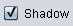

Σε αυτό τον οδηγό χρήσης εξηγούνται οι βασικές λειτουργίες του εργαλείου κατασκευής εννοιολογικού χάρτη. Κάντε κλικ σε έναν από τους ακόλουθους συνδέσμους για να μάθετε πώς θα εκτελέσετε τη δραστηριότητα:
1. Δημιουργία κόμβου
Ένας νέος κόμβος εμφανίζεται.

Στον εννοιολογικό σας χάρτη πάντα να συνδέετε τους κόμβους μεταξύ τους.

Ελευθερώστε όταν εμφανιστεί το πράσινο πλαίσιο όπως φαίνεται πιο πάνω.


Ένα παράθυρο εμφανίζεται. Πατήστε το κουμπί Yes αν θέλετε να αφαιρέσετε τον κόμβο.
Ακολουθήστε τα ίδια βήματα για να αφαιρέσετε ένα σύνδεσμο (χωρίς να διαγράψετε τους κόμβους). Η μόνη διαφορά είναι, φυσικά, ότι πρέπει να επιλέξετε το σύνδεσμο που θέλετε να αφαιρέσετε αντί τον κόμβο.

Μια παλέτα χρωμάτων εμφανίζεται. Επιλέξτε το χρώμα της αρεσκείας σας.

Μια παλέτα χρωμάτων εμφανίζεται. Επιλέξτε το χρώμα της αρεσκείας σας.


| Κουμπί | Λειτουργία |
|---|---|
 |
Αφαιρεί όλους τους κόμβους και τους συνδέσμους. |
 |
Εμφανίζει το χρώμα του φόντου που επέλεξε ο χρήστης (βλέπε Αλλαγή χρώματος ενός κόμβου) |
 |
Εμφανίζει το προεπιλεγμένο χρώμα του φόντου (π.χ., γκρίζο) |
|  | Εμφανίζει μια γκρίζα σκιά γύρω από τον κόμβο (αυτό το χρώμα δεν μπορεί να αλλάξει) |
 |
Δεν εμφανίζει σκιά γύρω από τον κόμβο |